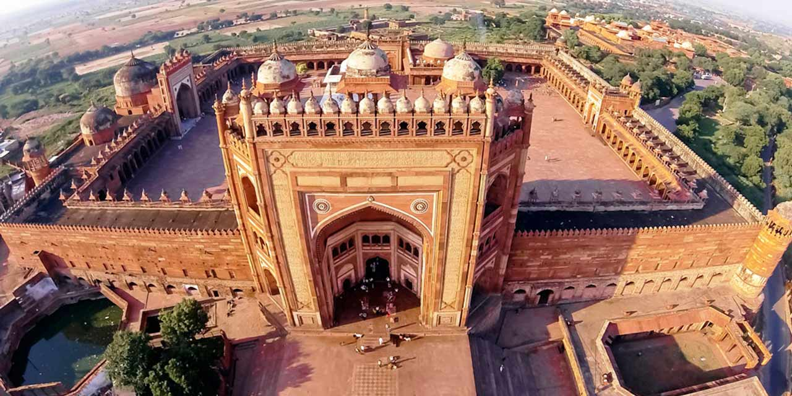

Taj Mahal
Agra
This iconic white marble mausoleum is one of the Seven Wonders of the World. Built by Mughal
Emperor Shah Jahan in memory of his wife Mumtaz Mahal, it is a masterpiece of Mughal architecture.

Red Fort
New Delhi
Also known as Lal Qila, this UNESCO World Heritage site was the main residence of the Mughal
emperors. It's a remarkable example of Indo-Islamic, Mughal, and Persian architecture.
Varanasi
Uttar Pradesh
One of the oldest continuously inhabited cities in the world, Varanasi is a spiritual and
cultural hub along the banks of the Ganges River, famous for its ghats, temples, and religious ceremonies.
Qutub Minar
New Delhi
This 73-meter-high tower is the world's tallest brick minaret and is a prominent example of
Indo-Islamic architecture. It's part of the Qutub Complex, a UNESCO World Heritage site.
Gwalior Fort
Madhya Pradesh
A massive hill fort, Gwalior Fort houses several palaces, temples, and the famous Sas Bahu
temples known for their intricate carvings.

Sanchi Stupa
Madhya Pradesh
Also known as Lal Qila, this UNESCO World Heritage site was the main residence of the Mughal
emperors. It's a remarkable example of Indo-Islamic, Mughal, and Persian architecture.
Rani Ki Vav
Gujarat
An intricately designed stepwell, Rani Ki Vav is a UNESCO World Heritage site known for its
stunning architecture and sculpture work.

Fatehpur Sikri
Uttar Pradesh
A well-preserved Mughal city built by Emperor Akbar, it's known for its stunning palaces,
mosques, and the Buland Darwaza, the highest gateway in the world.
Introducton
India is a land of rich history and culture, and it boasts a plethora of historical places that
span centuries and reflect the diverse heritage of the country. Here are some of the most famous historical
places in India.India, with its kaleidoscope of history, unfolds a captivating narrative through its historical
places. These sites, scattered across the subcontinent, stand as witnesses to the rise and fall of empires, the
ebb and flow of cultures, and the enduring spirit of a nation. From the iconic Taj Mahal in Agra, a testament to
eternal love, to the mighty Red Fort in Delhi, echoing tales of Mughal grandeur, each place tells a unique
story.
In the southern reaches, the ruins of Hampi in Karnataka transport us to the Vijayanagara Empire, where temples
and marketplaces whisper tales of a bygone era. Journeying to Delhi, the Qutub Minar pierces the sky, an
architectural marvel dating back to the 12th century, while the Red Fort, a symbol of India's struggle for
independence, stands as a living testament to history.
The rock-cut wonders of Ajanta and Ellora in Maharashtra unfold an ancient canvas, adorned with vibrant
paintings and sculptures that depict the cultural amalgamation of Buddhism, Hinduism, and Jainism. In Madhya
Pradesh, the Khajuraho Group of Monuments invites exploration of intricately carved temples, offering a glimpse
into the artistic brilliance of the Chandela dynasty.
Rajasthan's Amer Fort, perched majestically on a hill, mirrors the grandeur of Rajput and Mughal architecture,
while Mahabalipuram in Tamil Nadu unveils a coastal town adorned with rock-cut temples and sculptures,
reflecting the finesse of Pallava craftsmanship.
Fatehpur Sikri, a ghost city near Agra, stands as an architectural marvel founded by Emperor Akbar, while the
Sanchi Stupa in Madhya Pradesh takes us back to the roots of Buddhism, with its ancient dome and intricate
carvings.
As we traverse this vast and diverse landscape, the historical places of India beckon with stories of love,
power, spirituality, and cultural exchange. Each site is a chapter in the epic tale of India's past, inviting
exploration and reflection on the footsteps of those who shaped the nation's destiny.
The Taj Mahal, a sublime masterpiece of Mughal architecture, stands as an ethereal symbol of
eternal love and unparalleled beauty on the banks of the Yamuna River in Agra, India. Commissioned by the fifth
Mughal emperor, Shah Jahan, in memory of his beloved wife Mumtaz Mahal, the Taj Mahal is a testament to the
grandeur and sophistication of the Mughal Empire.
Completed in 1653 after more than two decades of meticulous construction, the Taj Mahal is a marvel of white
marble, adorned with intricate inlays of semi-precious stones that create mesmerizing patterns and designs. The
mausoleum is flanked by four minarets, each standing at an impressive height and contributing to the overall
symmetrical perfection of the structure.
Approaching the Taj Mahal through the majestic entrance gate, one is greeted by a magnificent garden known as
the Charbagh, or four-fold garden. The garden is divided into quadrants by water channels, reflecting the
Islamic concept of paradise, with the Taj Mahal serving as the centerpiece. The serene reflection pool in front
of the monument enhances its beauty, creating a stunning mirage that further accentuates its ethereal quality.
The main mausoleum houses the cenotaphs of Shah Jahan and Mumtaz Mahal, with the actual graves located in a
crypt below. The interior of the Taj Mahal is adorned with intricate carvings, delicate floral motifs, and
calligraphy from the Quran, showcasing the artistic prowess of the Mughal craftsmen. The play of light on the
translucent marble changes throughout the day, creating a dynamic visual experience that adds to the monument's
allure.
The Taj Mahal's architectural brilliance extends beyond its exterior and interior design. The precise
mathematical and scientific principles employed in its construction are awe-inspiring. The dome, for instance,
is designed to appear symmetrical from any angle, and the minarets slightly tilt outward to prevent them from
falling onto the main structure in the event of an earthquake.
Declared a UNESCO World Heritage Site in 1983, the Taj Mahal continues to captivate millions of visitors from
around the globe. Its significance extends beyond its architectural splendor, encompassing the poignant love
story that inspired its creation. As the sun sets and bathes the Taj Mahal in a warm, golden glow, it stands as
a timeless tribute to love, art, and the enduring legacy of one of the world's most remarkable civilizations.
The Red Fort, also known as Lal Qila, is a majestic fortress located in the heart of Old Delhi,
India. Built during the reign of the fifth Mughal Emperor, Shah Jahan, in the mid-17th century, the Red Fort
stands as a testament to the architectural grandeur and political significance of the Mughal Empire.
Constructed using red sandstone, the fort is an imposing structure that stretches over a vast area, surrounded
by high walls and a deep moat. Its design reflects a fusion of Persian, Timurid, and Indian architectural
styles, resulting in a synthesis that is both aesthetically pleasing and functionally impressive.
Entering through the Lahore Gate, visitors are greeted by the Chhatta Chowk, a covered bazaar that once bustled
with merchants selling various goods to the imperial court. The fort's architecture is characterized by
intricate carvings, delicate marble inlays, and ornate embellishments that adorn its walls and structures. The
main structures within the fort include the Diwan-i-Aam (Hall of Public Audience), Diwan-i-Khas (Hall of Private
Audience), the Rang Mahal (Palace of Colors), and the Mumtaz Mahal.
The Diwan-i-Aam is an open courtyard where the emperor would address the general public and listen to their
grievances. The Diwan-i-Khas, in contrast, is a more private space adorned with intricate floral patterns and a
stunning white marble throne platform where the emperor would meet with select dignitaries.
The Rang Mahal, or Palace of Colors, served as the residence of the emperor's wives and mistresses. Its name is
derived from the vibrant decorations that once adorned its interiors. The Mumtaz Mahal, named after Shah Jahan's
beloved wife Mumtaz Mahal, was a palace reserved for the emperor's personal use.
One of the most iconic features of the Red Fort is its stunning Pearl Mosque, or Moti Masjid, constructed with
white marble and adorned with three elegant domes. The mosque stands as a serene sanctuary within the fort
complex.
The Red Fort holds historical significance as the place where India's tricolor flag is hoisted every year on
Independence Day, marking the anniversary of India's freedom from British rule in 1947. In 2007, the Red Fort
was designated as a UNESCO World Heritage Site, acknowledging its cultural and historical importance. As
visitors wander through its courtyards and marvel at its architecture, the Red Fort continues to stand as a
symbol of India's rich history and its enduring architectural legacy.
Varanasi, often hailed as the spiritual heart of India, is a city that encapsulates the essence of
Hinduism, spirituality, and the timeless flow of the sacred Ganges River. Nestled on the banks of the river in
the northern state of Uttar Pradesh, Varanasi, also known as Benares or Kashi, holds a revered place in the
religious and cultural tapestry of the country.
The city's history is said to stretch back thousands of years, making it one of the oldest continuously
inhabited cities in the world. Varanasi is a living embodiment of India's cultural and spiritual heritage, where
ancient rituals seamlessly merge with the rhythms of daily life. The city is a pilgrimage site for Hindus, who
believe that dying here and being cremated along the Ganges River breaks the cycle of rebirth and leads to
salvation.
One of the most iconic aspects of Varanasi is the Ghats - a series of steps leading down to the Ganges River.
The ghats are not merely physical structures but are spiritual hubs where life and death coexist in a dance of
rituals and ceremonies. There are around 84 ghats along the river, each with its unique significance.
Dashashwamedh Ghat, one of the most prominent, witnesses the Ganga Aarti, a mesmerizing ritual of lights, fire,
and devotional songs, performed every evening.
The narrow, labyrinthine streets of Varanasi, known as galis, are a sensory overload of sights, sounds, and
smells. Temples, shrines, and traditional shops line these alleys, offering a glimpse into the city's religious
and cultural vibrancy. The Kashi Vishwanath Temple, dedicated to Lord Shiva, is a revered site where devotees
throng to seek blessings.
Varanasi is also a hub of learning and philosophy. The Benares Hindu University, established in 1916, is a
renowned institution that has produced scholars, artists, and leaders who have contributed significantly to
various fields.
The city is a melting pot of diverse experiences. The chaotic yet harmonious blend of life along the ghats, the
serenity of ancient temples, and the vibrant energy of the markets make Varanasi a place where time seems to
stand still even as the world around it evolves.
Varanasi is not just a destination; it is a pilgrimage for the soul, an exploration of spirituality, and an
immersion into the cultural fabric of India. It beckons travelers and seekers alike to witness the rituals, feel
the energy, and experience the timeless allure that has drawn people to its sacred shores for millennia. In
Varanasi, the river of life flows, and every moment is a celebration of the eternal.
The Qutub Minar, standing proudly in the heart of Delhi, is an iconic symbol of India's rich
historical and architectural heritage. This towering minaret, the tallest brick minaret in the world, is located
in the Qutub Complex, a UNESCO World Heritage Site that encapsulates centuries of history and culture.
Commissioned by Qutb-ud-din Aibak, the first ruler of the Delhi Sultanate, in the late 12th century, the Qutub
Minar is a magnificent example of Indo-Islamic architecture. The construction of the minaret was continued by
subsequent rulers, including Iltutmish and Firoz Shah Tughlaq, resulting in a structure that seamlessly blends
different architectural styles over the centuries.
Rising to a height of 73 meters (239 feet) and consisting of five distinct storeys, each marked by intricately
carved balconies and a projecting balcony encircling the structure, the Qutub Minar is a testament to the
craftsmanship of the medieval artisans. The exterior of the minaret is adorned with verses from the Quran in
elegant Arabic calligraphy, adding a layer of cultural and religious significance to its aesthetic appeal.
The Qutub Minar is not only a standalone marvel but is complemented by the surrounding Qutub Complex, which
features other historically significant structures. The Quwwat-ul-Islam Mosque, the first mosque built in Delhi
after the Islamic conquest, stands adjacent to the minaret. Its construction incorporated materials from
demolished Hindu and Jain temples, leading to a unique amalgamation of architectural styles.
Another notable structure within the complex is the Iron Pillar of Delhi, a rust-resistant iron pillar that has
baffled scientists for centuries due to its corrosion resistance. This intricately crafted pillar stands as a
testament to ancient Indian metallurgical prowess.
As visitors explore the Qutub Complex, they are transported back in time, surrounded by the remnants of a bygone
era. The intricacies of the carvings, the towering presence of the minaret, and the historical significance of
the complex collectively contribute to an immersive experience that transcends time.
The Qutub Minar has withstood the test of time, surviving centuries of weathering, earthquakes, and human
activity. It continues to stand tall as a beacon of Delhi's historical legacy and a symbol of the cultural
synthesis that defines India's architectural landscape. For those who venture into its shadow, the Qutub Minar
unfolds a narrative of medieval grandeur and artistic brilliance, inviting contemplation on the passage of time
and the resilience of human creativity.
Perched majestically on a sandstone hill, the Gwalior Fort in the city of Gwalior, Madhya Pradesh,
is a grand testament to the architectural prowess and historical significance of India. This formidable fort,
standing sentinel over the city, has witnessed centuries of conquests, cultural exchanges, and political
intrigue, making it a captivating destination for history enthusiasts.
The origins of Gwalior Fort can be traced back to the 8th century when it was established by Raja Suraj Sen.
However, the fort as it stands today is predominantly a result of various renovations and additions made by
different rulers over the centuries. The fort has seen the rule of Rajputs, Mughals, Marathas, and the British,
each leaving their mark on its sprawling complex.
The fort is a formidable structure, with sandstone walls that snake around the hill, creating a dramatic
silhouette against the skyline. As visitors ascend the fort, they are greeted by ornate gates that serve as
portals to the rich history within. The Hathi Pol (Elephant Gate) and the Badal Mahal Gate are notable
entrances, each adorned with intricate carvings and detailed artwork.
Once inside, the Gwalior Fort unfolds as a treasure trove of palaces, temples, and water tanks. The Man Singh
Palace, built by Man Singh Tomar in the 15th century, is a marvel of Rajput architecture. Its interior showcases
beautiful blue ceramic tiles and delicate frescoes that narrate stories of courtly life and mythical tales.
The Gujari Mahal, another structure within the fort, was built by Raja Man Singh for his queen, Mrignayani. This
palace now houses the Archaeological Museum, displaying a rich collection of artifacts, sculptures, and
inscriptions from various periods of Gwalior's history.
The Saas Bahu Temples, dedicated to Vishnu, are an exquisite example of medieval architecture. Despite their
name, which translates to "Mother-in-law and Daughter-in-law" temples, they are not related to any family ties
but rather signify the dual temples dedicated to different deities.
The Teli Ka Mandir, standing tall within the fort, is a unique blend of Dravidian and North Indian architectural
styles. Its towering spire and intricately carved sculptures make it a visual delight.
One of the most iconic features of Gwalior Fort is the Gwalior Fort Light and Sound Show. This audio-visual
extravaganza brings the history of the fort to life, narrating tales of valor, intrigue, and cultural exchange
against the backdrop of the illuminated fort.
Gwalior Fort, with its architectural diversity and historical richness, offers a panoramic view of the city
below and stands as a testament to the resilience and adaptability of Indian heritage. As visitors wander
through its courtyards, palaces, and temples, they are transported through the corridors of time, connecting
with the vibrant history that has unfolded within the walls of Gwalior Fort.
Nestled on a serene hilltop in the state of Madhya Pradesh, the Sanchi Stupa stands as a timeless
testimony to the spread of Buddhism and the architectural grandeur of ancient India. Designated as a UNESCO
World Heritage Site, Sanchi holds a revered place in Buddhist history, offering a glimpse into the spiritual and
artistic legacy of the Mauryan and Sunga dynasties.
Constructed during the reign of Emperor Ashoka in the 3rd century BCE, the Sanchi Stupa is one of the oldest
stone structures in India. It was built to enshrine and honor the relics of Lord Buddha, making it a significant
pilgrimage site for Buddhists worldwide. The stupa is part of a larger complex that includes several stupas,
monasteries, and other structures, forming a rich repository of Buddhist art and architecture.
The Great Stupa at Sanchi serves as the focal point of the complex, its massive hemispherical dome reaching
towards the heavens. The stupa is encircled by a stone railing, adorned with intricately carved depictions of
scenes from the life of Buddha, Jataka tales, and various symbols. The four intricately carved gateways, known
as toranas, are exceptional examples of ancient Indian art, showcasing detailed reliefs that narrate the life of
Buddha and his previous incarnations.
Each torana is a masterpiece, with delicate carvings depicting celestial beings, animals, and floral motifs. The
Eastern Gateway is particularly renowned for its depiction of the miracle of Sravasti, where Buddha multiplied
himself to prove his divine nature. The toranas not only serve as gateways to the stupa but also as symbolic
thresholds representing the transition from the secular to the sacred.
The Ashoka Pillar, standing near the southern gateway, is another noteworthy feature of Sanchi. This intricately
carved pillar bears Ashoka's edicts and serves as a testament to the emperor's commitment to Buddhism and the
promotion of ethical conduct.
The monasteries and stupas surrounding the Great Stupa add to the holistic experience of Sanchi. The monastic
structures, with their simple yet elegant architecture, reflect the austere lifestyle of Buddhist monks who once
inhabited them.
Despite centuries of weathering, the Sanchi Stupa and its complex have retained their spiritual and artistic
significance. The site underwent restoration efforts in the 19th century, led by British officer Sir John
Marshall, further ensuring the preservation of this cultural gem.
As visitors meander through the tranquil landscape of Sanchi, surrounded by the whispers of rustling leaves and
the echoes of ancient chants, they find themselves immersed in a sacred atmosphere. Sanchi Stupa not only stands
as a marvel of ancient engineering but also as a beacon of the profound spiritual teachings that have resonated
through the ages, inviting all who come to contemplate the serenity and wisdom encapsulated within its hallowed
walls.
Rani Ki Vav, an exquisite stepwell located in the town of Patan in Gujarat, India, stands as a marvel of ancient
Indian architecture and is a UNESCO World Heritage Site. Constructed in the 11th century by Queen Udayamati in
memory of her husband, King Bhimdev I of the Solanki dynasty, Rani Ki Vav is not just a utilitarian structure
for water storage but a breathtaking piece of subterranean art.
The stepwell is a perfect blend of functionality and aesthetic splendor. As visitors descend the wide steps into
the depths of the well, they are greeted by intricate carvings, sculptures, and ornate architecture that unfold
like a mesmerizing tale etched in stone.
The stepwell is designed as an inverted temple, showcasing a series of seven levels of stairs that lead deeper
into the earth. The walls of Rani Ki Vav are adorned with over 500 principal sculptures and numerous minor ones,
each telling stories from Hindu mythology and offering glimpses into the cultural and spiritual ethos of the
time.
One of the most iconic features of Rani Ki Vav is its sculpted panels, which portray a myriad of deities,
celestial beings, and mythological scenes. The Vishnu Avataras, various forms of Lord Vishnu, are prominently
featured, as are episodes from the Ramayana, Mahabharata, and Puranas. The detailing is so intricate that it
captures expressions, emotions, and intricate jewelry with remarkable precision.
The central theme of Rani Ki Vav is water and its sanctity. The well showcases an array of sculptures dedicated
to water-related deities, including Ganga, Yamuna, Saraswati, and various celestial beings associated with
rivers and water bodies. The fluidity of the carvings reflects the cultural importance of water in Hinduism and
the concept of the sacred rivers.
The architecture of Rani Ki Vav is characterized by a series of pillared pavilions with intricately carved
arches, adding to the visual grandeur. The stepped corridor is punctuated with a multitude of finely carved
niches, creating a rhythmic play of light and shadow as one moves through the structure.
Sadly, Rani Ki Vav was buried under layers of silt for centuries, only to be rediscovered in the 1940s. The
subsequent restoration efforts have revealed the full splendor of this hidden gem, and it has since become a
celebrated destination for art enthusiasts, historians, and tourists.
Rani Ki Vav is not merely a stepwell; it is a subterranean art gallery that transports visitors to an era of
artistic brilliance and cultural opulence. As one stands amidst the intricate carvings and sculptures, it's as
if the walls themselves whisper tales of a bygone era, inviting all who behold it to marvel at the fusion of
artistry, spirituality, and engineering that defines this extraordinary monument.
Fatehpur Sikri, a UNESCO World Heritage Site situated on the outskirts of Agra in Uttar Pradesh, India, is a
testament to the architectural brilliance and historical significance of the Mughal Empire. Commissioned by
Emperor Akbar in the 16th century, Fatehpur Sikri served as the capital of the Mughal Empire for a short but
significant period.
The city, constructed between 1569 and 1585, reflects the vision of Akbar, who sought to create an ideal city
that embraced cultural diversity, religious tolerance, and administrative efficiency. Fatehpur Sikri's
architectural splendor is a fusion of Persian, Timurid, and Indian styles, resulting in a unique blend that
stands as a symbol of the cultural synthesis during the Mughal era.
One of the most iconic structures within Fatehpur Sikri is the Buland Darwaza, or the "Gate of Magnificence."
This colossal gateway, built to commemorate Akbar's victory over Gujarat, is a towering masterpiece adorned with
intricate carvings and inscriptions. The Buland Darwaza stands as a grand entrance to the city, announcing the
grandeur that awaits within.
The Jama Masjid, the primary mosque within Fatehpur Sikri, is a grand edifice that showcases the architectural
finesse of the Mughals. The mosque's courtyard is surrounded by a colonnade of red sandstone pillars and is
adorned with white marble domes and exquisite calligraphy.
The Diwan-i-Aam, or Hall of Public Audience, is another remarkable structure where Akbar held discussions with
his subjects. The Diwan-i-Khas, or Hall of Private Audience, stands in stark contrast, adorned with a central
pillar that once held Akbar's famous "Jodha Bai's palace, believed to be the residence of Akbar's Rajput queen,
Jodha Bai, showcases a unique blend of Rajput and Mughal architectural styles. The intricate carvings, jalis
(lattice screens), and courtyards exemplify the synthesis of cultures that defined Akbar's reign.
The Panch Mahal, a five-story palatial structure, served as a place of recreation and entertainment for the
royal family. Its open-sided architecture, with diminishing stories, offers panoramic views of the surrounding
landscape.
One of the most poignant structures within Fatehpur Sikri is the Tomb of Sheikh Salim Chishti, a Sufi saint
whose blessings are said to have been instrumental in the birth of Akbar's heir, Jahangir. The tomb is a white
marble masterpiece adorned with delicate carvings and lattice screens.
Fatehpur Sikri, despite its architectural grandeur, was abandoned as the Mughal capital due to water shortages
and other logistical challenges. However, its well-preserved structures stand as a testament to the visionary
rule of Akbar and the cultural richness of the Mughal Empire. Today, as visitors explore the courtyards,
palaces, and mosques of Fatehpur Sikri, they step back in time to an era of imperial opulence and cultural
synthesis that shaped the course of Indian history.